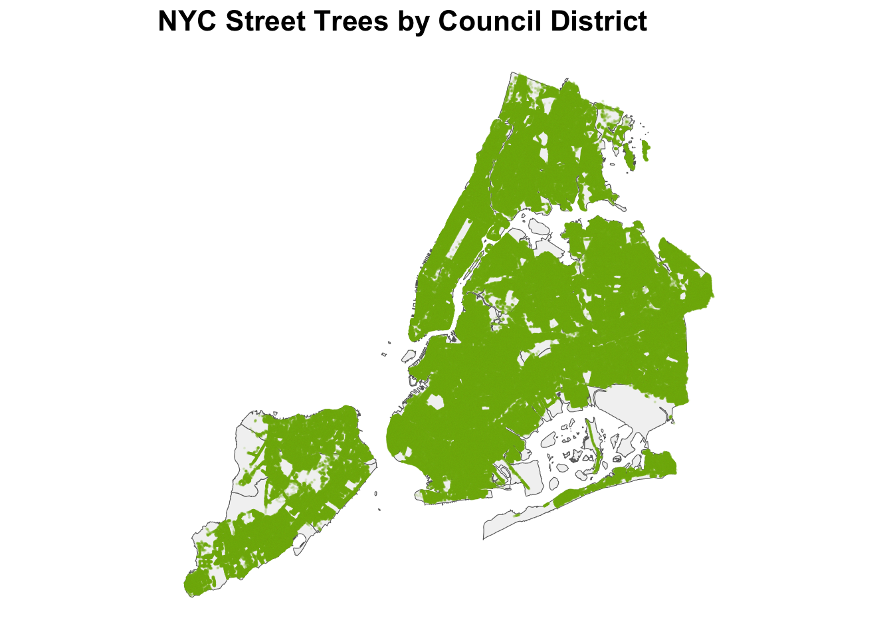

Mini-Project #03: Visualizing and Maintaining the Green Canopy of NYC
Author
Wing Chan
Data Acquisition
NYC City Council Districts Task 1: Download NYC Citcy Council District Boundaries
# Create data/mp03 under working folder if it doesnt exsit if(!dir.exists(file.path("data", "mp03"))){dir.create(file.path("data", "mp03"), showWarnings=FALSE, recursive=TRUE)}#download zip file -- City Council (Clipped to Shoreline) Most Recent Release#https://s-media.nyc.gov/agencies/dcp/assets/files/zip/data-tools/bytes/city-council/nycc_25c.zip#current_url <-"https://s-media.nyc.gov/agencies/dcp/assets/files/zip/data-tools/bytes/city-council/nycc_25c.zip"destfile <-"data/mp03/nycd_23c.zip"if (!file.exists(destfile)) {download.file(current_url, destfile = destfile, mode ="wb")message("File downloaded successfully to: ", destfile)} else {message("File already exists at: ", destfile)}
File already exists at: data/mp03/nycd_23c.zip
#unzip the downloaded fileunzip(zipfile = destfile, exdir="data/mp03")#Read the shp file in the unzipped directory using sf::st_read.library(sf)
Linking to GEOS 3.13.0, GDAL 3.8.5, PROJ 9.5.1; sf_use_s2() is TRUE
Reading layer `nycc' from data source
`/Users/wingchan/STA9750-2025-FALL/data/mp03/nycc_25c/nycc.shp'
using driver `ESRI Shapefile'
Simple feature collection with 51 features and 3 fields
Geometry type: MULTIPOLYGON
Dimension: XY
Bounding box: xmin: 913175.1 ymin: 120128.4 xmax: 1067383 ymax: 272844.3
Projected CRS: NAD83 / New York Long Island (ftUS)
#Transform the resultnyc_councildistricts <-st_transform(nyc_councildistricts, crs="WGS84")nyc_councildistricts
✅ Combined dataset already exists at data/mp03/treepoints_all.gpkg
library(sf)library(dplyr)
Attaching package: 'dplyr'
The following objects are masked from 'package:stats':
filter, lag
The following objects are masked from 'package:base':
intersect, setdiff, setequal, union
combined_file <-"data/mp03/treepoints_all.gpkg"# --- Check if combined file already exists ---if (file.exists(combined_file)) {cat("✅ Combined dataset already exists at", combined_file, "\n") treepoints_sf <-st_read(combined_file, quiet =TRUE)} else {# List all batch files batch_files <-list.files("data/mp03/batches", pattern ="\\.geojson$", full.names =TRUE)cat("📂 Found", length(batch_files), "files to read.\n")# Read each file into sf object all_batches <-lapply(batch_files, function(f) {cat("Reading", f, "\n")tryCatch(st_read(f, quiet =TRUE), error =function(e) NULL) })# Combine all batches treepoints_sf <-bind_rows(all_batches)# Save combined filest_write(treepoints_sf, combined_file, delete_dsn =TRUE)cat("✅ Combined dataset with", nrow(treepoints_sf), "records saved to", combined_file, "\n")}
✅ Combined dataset already exists at data/mp03/treepoints_all.gpkg
Data Integration and Initial Exploration
Task 3: Plot All Tree Points
library(ggplot2)library(sf)# Base map with NYC council districts (polygon layer)ggplot() +# Council district boundariesgeom_sf(data = nyc_councildistricts,fill ="grey95",color ="grey40",size =0.4 ) +# Trees (point layer)geom_sf(data = treepoints_sf, # or treepoints_sfcolor ="#80B40A", # greenalpha =0.1, # transparency to reduce overplottingsize =0.1# small points for legibility ) +# Titles and labelslabs(title ="NYC Street Trees by Council District" ) +# Stylingtheme_minimal() +theme(panel.grid.major =element_blank(),axis.text =element_blank(),axis.ticks =element_blank(),axis.title =element_blank(),plot.title =element_text(size =16, face ="bold"),plot.subtitle =element_text(size =12) )

#get tree sampletreepoints_sample <- treepoints_sf |>slice_sample(n =100000)#check sample datahead(treepoints_sample)
Simple feature collection with 6 features and 13 fields
Geometry type: POINT
Dimension: XY
Bounding box: xmin: -74.14782 ymin: 40.564 xmax: -73.82123 ymax: 40.83363
Geodetic CRS: WGS 84
tpcondition stumpdiameter riskratingdate riskrating objectid
1 Good 0 <NA> <NA> 2150908
2 Fair <NA> 2024-09-05 16:41:29 7 4633657
3 Good <NA> 2024-07-29 19:19:22 3 10676543
4 Dead 25 <NA> <NA> 4801682
5 Fair <NA> 2025-10-02 14:43:58 6 3980872
6 Good <NA> 2024-12-24 13:36:19 6 4001963
globalid tpstructure
1 0CC88719-8060-4BFA-8EC1-EF3EB512DAC9 Retired
2 13509379-601D-4472-8CEE-503B784233FF Full
3 BED2D679-7D3A-4FB7-A92E-39EB31EAE2CF Full
4 3D48AD8D-85C3-452E-9117-2EAD08BBAD8D Retired
5 1266C957-6914-4A02-832D-F6FCFCF6FFC2 Full
6 6638DBDA-6427-4C2E-9544-751A4EE415F3 Full
plantingspaceglobalid createddate dbh planteddate
1 20F481F8-1EA5-4F34-84C3-6BDF4BF695A7 2016-01-05 20:37:00 12 <NA>
2 96D99E3A-85B2-47D8-8990-4D1CA0B24C01 2016-11-02 16:59:52 14 <NA>
3 32E077DF-3F08-401E-83FA-68D55007A236 2020-06-01 19:46:00 9 <NA>
4 E33B24CF-59C3-4DE3-9E50-F8E8F0DB0C1C 2017-01-05 11:01:00 0 <NA>
5 9734501C-9899-489B-B2FB-B43902A0C3AA 2016-07-28 12:29:08 8 <NA>
6 1F1C5501-DDCB-4871-8141-9F563D44FBBF 2016-07-27 14:19:57 8 <NA>
updateddate
1 2019-11-06 15:02:00
2 2024-09-05 16:41:29
3 2024-07-29 19:19:22
4 2017-03-14 15:31:00
5 2025-10-02 14:43:58
6 2024-12-24 13:36:19
genusspecies
1 Ginkgo biloba - maidenhair tree
2 Gleditsia triacanthos var. inermis - Thornless honeylocust
3 Gleditsia triacanthos var. inermis - Thornless honeylocust
4 Unknown - Unknown
5 Quercus palustris - pin oak
6 Acer rubrum - red maple
geom
1 POINT (-73.99316 40.72543)
2 POINT (-73.82123 40.72916)
3 POINT (-73.97664 40.60126)
4 POINT (-73.86246 40.83363)
5 POINT (-74.14782 40.564)
6 POINT (-74.03595 40.62866)
summary(treepoints_sample)
tpcondition stumpdiameter riskratingdate
Length:100000 Length:100000 Min. :2015-10-27 04:00:00
Class :character Class :character 1st Qu.:2021-01-08 14:28:52
Mode :character Mode :character Median :2023-03-22 15:59:18
Mean :2022-09-06 18:47:32
3rd Qu.:2024-09-12 16:10:44
Max. :2025-10-29 20:03:04
NA's :44264
riskrating objectid globalid tpstructure
Length:100000 Length:100000 Length:100000 Length:100000
Class :character Class :character Class :character Class :character
Mode :character Mode :character Mode :character Mode :character
plantingspaceglobalid createddate dbh
Length:100000 Min. :2015-02-28 05:00:00 Length:100000
Class :character 1st Qu.:2016-01-05 18:32:27 Class :character
Mode :character Median :2016-07-27 12:49:48 Mode :character
Mean :2017-08-08 03:59:27
3rd Qu.:2018-02-19 11:27:14
Max. :2025-10-29 19:48:00
planteddate updateddate genusspecies
Min. :2015-09-25 00:00:00 Min. :2015-04-17 11:58:00 Length:100000
1st Qu.:2019-06-12 08:18:20 1st Qu.:2019-03-14 12:43:44 Class :character
Median :2022-05-27 04:00:00 Median :2022-03-14 16:14:42 Mode :character
Mean :2021-10-26 19:51:10 Mean :2021-11-18 05:28:29
3rd Qu.:2024-04-15 04:00:00 3rd Qu.:2024-07-15 17:36:39
Max. :2025-10-28 04:00:00 Max. :2025-10-29 20:03:04
NA's :89186 NA's :19215
geom
POINT :100000
epsg:4326 : 0
+proj=long...: 0
Which council district has the highest density of trees? The Shape_Area column from the district shape file will be helpful here.
District 7 has highest density of trees of 0.0281538%.
#Q3Top_dead_tree_district <-districts_trees |>st_drop_geometry() |># Drop geometry for easy countinggroup_by(CounDist) |>summarise(total_trees =n(), # (1) Total trees per districttotal_dead_trees =sum(tpcondition =="Dead", na.rm =TRUE), # (2) Dead treespercent_dead_trees = (total_dead_trees / total_trees) *100# (3) Percentage )|>ungroup() |>slice_max(order_by=percent_dead_trees, n=1)
Which district has highest fraction of dead trees out of all trees?
District 32 has highest fraction of dead trees of 14.2229272% .
#Q4tree_species_manhattan <- districts_trees |># Add borough column based on CounDistmutate(borough =case_when( CounDist >=1& CounDist <=10~"Manhattan", CounDist >=11& CounDist <=18~"Bronx", CounDist >=19& CounDist <=32~"Queens", CounDist >=33& CounDist <=48~"Brooklyn", CounDist >=49& CounDist <=51~"Staten Island",TRUE~NA_character_# handle unexpected values ) ) |>#Filter for Manhattan onlyfilter(borough =="Manhattan")|># Drop geometry for easy countingst_drop_geometry() |>#Count number of trees by speciesgroup_by(genusspecies) |>summarise(tree_count =n(), .groups ="drop")Top_tree_species_manhattan <- tree_species_manhattan |>slice_max(order_by = tree_count, n=1)
What is the most common tree species in Manhattan?
The most common tree speies in Manhattan is Gleditsia triacanthos var. inermis - Thornless honeylocust. There are 17311 Gleditsia triacanthos var. inermis - Thornless honeylocust in Manhattan.
What is the species of the tree closest to Baruch’s campus?
The species of the tree closest to Baruch’s campus is Quercus acutissima - sawtooth oak . # Government Project Design
Task 5: NYC Parks Proposal
Tree Equity Initiative: Greening District 26 – A Proposal for 10,642 New Trees
Prepared for NYC Parks & City Council November 2025
Background
This proposal outlines the District 26 Tree Equity Initiative, a critical project designed to enhance environmental quality and resident well-being in the neighborhoods of District 26. The primary goal is to address the district’s severely underdeveloped tree canopy, focusing on areas identified as vulnerable: industrial zones, underutilized open spaces along rail corridors, and exposed waterfronts. The project involves the systematic removal of hazardous stumps, comprehensive planting of new street and park trees, and the establishment of a robust program to ensure the long-term success of the new green infrastructure. Investing in tree canopy is investing in public health, cooling critical heat islands, and improving air quality.
The Tree Equity Goal
Based on the goal of reaching the average tree density observed across the New York City districts, the scope of this project is set to address the current deficit. The target of 10,642 trees will raise District 26’s tree count from 15,372 to 26,014, lifting the district’s density to the current NYC district average of approximately 0.015468 trees per square foot of public space.
[Sub title here]
[[map chart here]] The above visualization of District 26 provides highlights two critical areas for tree implementation:
Comparison to the Waterfront Corridors (in dark green): Areas along the East River (Eastside) show high potential for increased density, contrasting with other districts (like District 4 or 5) that have already implemented robust waterfront greening.
Industrial Zones: The southern, former factory zones and areas adjacent to the rail lines present expansive, underutilized opportunities for tree installation to mitigate the heat island effect and buffer residential areas.
District 26 currently holds the dubious distinction of having one of the lowest tree densities among its peers, making it an ideal, high-impact candidate for this federal investment.
Why District 26
[[Missing one non map data visualization – to add to a point]]
[show table of lowest 5 tree density] District 26’s tree density of 0.00914 is significantly below the NYC district average of 0.015468, highlighting a clear need for intervention. Although some districts have lower absolute tree counts, their larger land areas often obscure the urgency of improvement. In contrast, District 26’s smaller area makes its low density both an urgent and manageable deficit. The accompanying graphic underscores this disparity by visually contrasting District 26’s density with that of comparable districts and the citywide mean, demonstrating that District 26 not only has the available land area but also represents the most strategic opportunity for investment to advance environmental equity across New York City.
Conclusion
This proposal addresses District 26’s urgent tree canopy deficit, which affects public health and quality of life. The Urban Canopy & Resilience Initiative targets the planting of 10,642 new trees in high-potential areas, providing a data-driven solution to improve environmental equity. We urge the committee to approve this investment for a greener, healthier, and more resilient District 26.
#for Task 5 :=> try to find the lowest tree density districtlowest_tree_density <- tree_density |>slice_min(order_by= tree_density, n=10)lowest_tree_density
#1 31 507654144. 31318 0.00617 <- JFK airport#2 50 665196534. 52439 0.00788 <- park included#3 32 358667790. 30261 0.00844 <- park included #4 46 277719690. 24304 0.00875 <- park included#5 26 168180998. 15372 0.00914 <- area possible for improve**summary(tree_density)
CounDist Shape_Area tree_count tree_density
Min. : 1.0 Min. : 37752246 Min. : 8326 Min. :0.006169
1st Qu.:13.5 1st Qu.: 77552173 1st Qu.:13930 1st Qu.:0.013223
Median :26.0 Median :115113830 Median :17946 Median :0.015060
Mean :26.0 Mean :165143965 Mean :21429 Mean :0.015468
3rd Qu.:38.5 3rd Qu.:180981210 3rd Qu.:24918 3rd Qu.:0.017386
Max. :51.0 Max. :665196534 Max. :70927 Max. :0.028154
##Mean :0.015468#tree need to plan for this district to meet avg green# 26014.24 (total) - 15372 (current) = 10642 more trees needed# formular = 168180998*0.015468/100# tree_density |>filter( CounDist ==26)
#graph #compare the tree density vs waterfronts (east/west) #get only graphing district district26 <-nyc_councildistricts |>#filter (CounDist ==26)filter(CounDist %in%c(26, 4, 5))#get only trees in district 26trees_districts26 <- districts_trees |>#filter(CounDist == 26) |>filter(CounDist %in%c(26)) |>select(objectid) |>st_drop_geometry() |>#drop the join geometryinner_join(treepoints_sf, by="objectid")summary(trees_districts26)
objectid tpcondition stumpdiameter
Length:15372 Length:15372 Length:15372
Class :character Class :character Class :character
Mode :character Mode :character Mode :character
riskratingdate riskrating globalid
Min. :2016-06-07 12:09:00 Length:15372 Length:15372
1st Qu.:2021-06-07 13:39:24 Class :character Class :character
Median :2022-11-04 14:24:22 Mode :character Mode :character
Mean :2022-10-08 03:36:52
3rd Qu.:2024-09-23 13:42:02
Max. :2025-10-29 14:17:10
NA's :6967
tpstructure plantingspaceglobalid createddate
Length:15372 Length:15372 Min. :2015-03-10 04:00:00
Class :character Class :character 1st Qu.:2016-01-05 17:21:11
Mode :character Mode :character Median :2016-05-11 20:55:23
Mean :2017-07-29 10:54:49
3rd Qu.:2017-10-12 11:11:11
Max. :2025-10-27 19:17:00
dbh planteddate updateddate
Length:15372 Min. :2015-10-09 04:00:00 Min. :2015-06-08 11:55:00
Class :character 1st Qu.:2019-03-25 04:00:00 1st Qu.:2020-02-19 03:48:00
Mode :character Median :2022-12-15 05:00:00 Median :2022-09-29 15:45:48
Mean :2022-04-05 19:41:12 Mean :2022-06-06 12:02:57
3rd Qu.:2024-11-14 05:00:00 3rd Qu.:2024-09-23 15:26:49
Max. :2025-10-27 04:00:00 Max. :2025-10-29 14:17:10
NA's :13683 NA's :4009
genusspecies geom
Length:15372 POINT :15372
Class :character epsg:4326 : 0
Mode :character +proj=long...: 0
objectid tpcondition stumpdiameter
Length:19421 Length:19421 Length:19421
Class :character Class :character Class :character
Mode :character Mode :character Mode :character
riskratingdate riskrating globalid
Min. :2015-10-27 04:00:00 Length:19421 Length:19421
1st Qu.:2021-06-10 12:19:46 Class :character Class :character
Median :2022-07-21 14:49:22 Mode :character Mode :character
Mean :2022-10-15 00:30:24
3rd Qu.:2024-09-04 17:45:23
Max. :2025-10-29 16:36:49
NA's :5223
tpstructure plantingspaceglobalid createddate
Length:19421 Length:19421 Min. :2015-03-04 05:00:00
Class :character Class :character 1st Qu.:2016-01-05 12:34:09
Mode :character Mode :character Median :2016-01-05 14:30:33
Mean :2017-03-06 01:46:37
3rd Qu.:2017-04-20 11:11:11
Max. :2025-10-27 12:01:00
dbh planteddate updateddate
Length:19421 Min. :2015-10-21 04:00:00 Min. :2015-04-26 12:47:00
Class :character 1st Qu.:2019-12-12 05:00:00 1st Qu.:2020-02-24 14:55:00
Mode :character Median :2021-12-10 05:00:00 Median :2022-05-26 23:40:05
Mean :2021-05-06 04:07:01 Mean :2022-05-29 15:38:48
3rd Qu.:2023-11-15 05:00:00 3rd Qu.:2024-08-21 17:19:23
Max. :2025-10-25 04:00:00 Max. :2025-10-29 16:36:49
NA's :17554 NA's :1841
genusspecies geom
Length:19421 POINT :19421
Class :character epsg:4326 : 0
Mode :character +proj=long...: 0
# Combine both tree data frames with a label for legendtrees_combined <-bind_rows( trees_districts26 |>mutate(group ="District 26"), trees_districts_compare |>mutate(group ="Districts 4 & 5"))#Map library(ggplot2)library(sf)# Base map with NYC council districts (polygon layer)ggplot() +# Council district boundariesgeom_sf(data = district26,aes(geometry = geometry),fill ="grey95",color ="grey40",size =0.4 ) +# Tree points with mapped color (so ggplot knows to make a legend)geom_sf(data = trees_combined,aes(geometry = geom, color = group),alpha =0.3,size =0.2 ) +# Color legend setup (defined outside of geom)scale_color_manual(name ="Tree Locations",values =c("District 26"="#B8CD0E","Districts 4 & 5"="#2A6417" ),guide =guide_legend(override.aes =list(size =4, alpha =1) # Make legend dots bigger & opaque ) ) +# Titles and labelslabs(title ="Comparison of Tree Distribution" ) +# Stylingtheme_minimal() +theme(panel.grid.major =element_blank(),axis.text =element_blank(),axis.ticks =element_blank(),axis.title =element_blank(),plot.title =element_text(size =16, face ="bold"),plot.subtitle =element_text(size =12),legend.title =element_text(face ="bold"),legend.position ="bottom" )